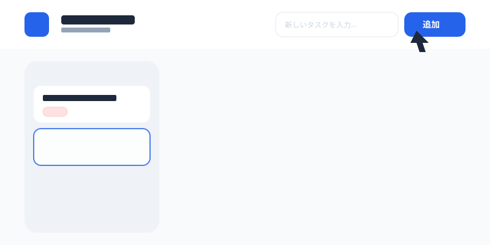
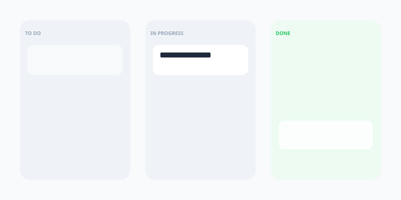
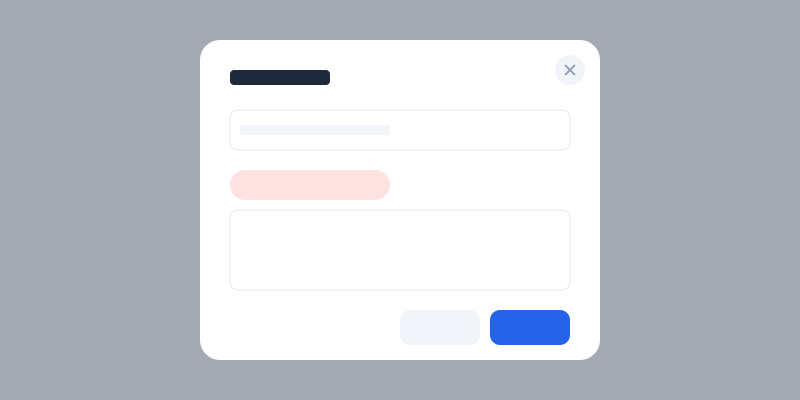
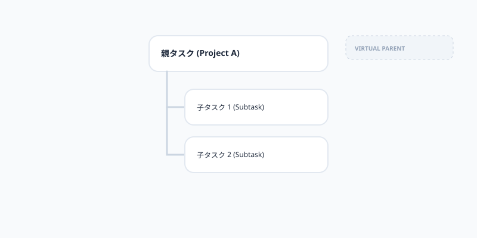

MonoFlow Operations
ヘッダーの入力欄にタイトルを入れて「追加」を押します。タスクは一番左のレーンに入ります。

カードをドラッグして、ToDo → 進行中 → 完了へと動かします。Doneに入れると自動で完了時間が記録されます。

カードをクリックして詳細設定。優先度、ラベル、期限、親子関係を自由に設定して管理します。

詳細画面の「親タスク」から他のチケットを選択できます。親子関係を作ると、子タスクはインデント（字下げ）表示され、グループ化されます。
親子が別レーンに離れても安心です。親には「他レーンの子の要約」、子には「他レーンの親の残像」が自動表示されます。
仮想チケットをクリックすると、本物のチケットがある場所まで画面が自動スクロールし、青くフラッシュして知らせます。

「Metrics」ではステータス分布や優先度を、「Burndown」では期限に向けた進捗ペースをグラフで確認できます。日付やラベルでの絞り込みも可能です。
データはすべてブラウザ内に保存され、外部には送信されません。別のPCに移したい場合は、設定メニューの「エクスポート」からJSONファイルを書き出してください。